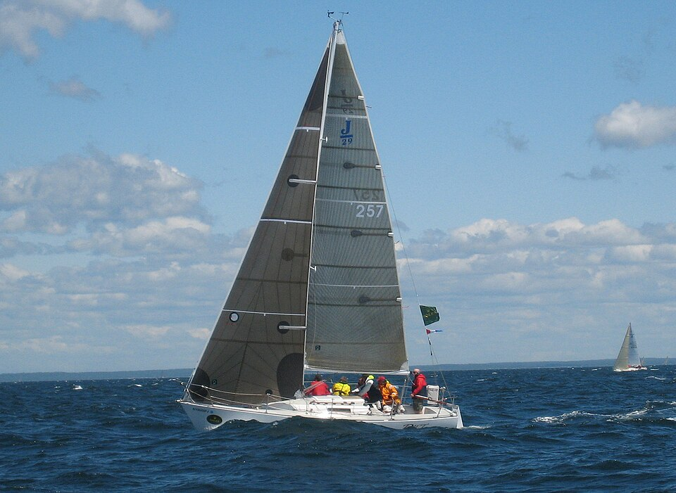

La vela que desvía el aire y la quilla que no deja derrapar
Navegar con el viento a favor es fácil de entender: el viento empuja la vela y el barco avanza. Pero un velero también puede ir contra el viento: no derecho, pero sí en ángulo, y haciendo zigzag llega adonde quiere. Algunos veleros, incluso, van más rápido que el viento. Ninguna de las dos cosas tiene magia: es física de fluidos, en el aire y en el agua.
El físico Joe Wolfe, de la Universidad de Nueva Gales del Sur, en Australia, empieza por el caso fácil. Con el viento de atrás, el viento empuja la vela, y la vela frena al aire: la tercera ley de Newton [1]. Pero hay un límite: navegando a favor del viento, un velero común siempre va más lento que el viento [1]. Y directamente contra el viento es imposible con velas: el barco se queda quieto, con las velas flameando [1].
Wolfe propone un experimento: sacá la mano por la ventanilla. Si la mano está plana, solo sentís el arrastre; si levantás un poco la parte de adelante, el aire se desvía hacia abajo y empuja la mano hacia arriba además de hacia atrás [1]. Navegar contra el viento usa la forma de la vela para producir esa fuerza [1]. El viento, para rodear la vela, tiene que cambiar de dirección; la vela le cambia la velocidad al aire y, por la tercera ley de Newton, el aire empuja la vela en sentido contrario [1]. Wolfe agrega que también hay un efecto de Bernoulli, que contribuye de manera secundaria [1].
La vela funciona, entonces, como un ala puesta en vertical, como cuenta el artículo de sustentación y circulación. El problema es la dirección de la fuerza: es sobre todo hacia el costado del barco, y más de costado cuanto más se acerca el rumbo al viento. Solo una parte apunta hacia adelante [1].

¿Por qué el barco no se va de costado? Un poco sí se va, explica Wolfe, pero al hacerlo la quilla, una superficie grande, casi plana y casi vertical bajo el casco, tiene que empujar mucha agua hacia el costado [1]. El agua se resiste y empuja la quilla con una fuerza lateral que cancela la componente lateral de la fuerza del viento [1]. Lo que queda es la componente hacia adelante, que acelera el barco hasta que la resistencia del agua la equilibra [1].
Así, un velero típico puede navegar a unos 45° del viento real, y los barcos de alto rendimiento todavía más cerca [1]. Para ir a un lugar que está justo de donde viene el viento, se navega en zigzag, cambiando de lado: es la virada [1].
El carozo apretado: apretá un carozo húmedo de aceituna entre dos dedos y sale disparado hacia un costado, aunque los dedos empujan uno contra el otro. Un velero hace algo parecido: el viento empuja la vela de un lado, el agua empuja la quilla del otro, y entre las dos fuerzas el barco «se escurre» hacia adelante.
Wolfe explica que algunos veleros, como los skiffs de 18 pies de la bahía de Sídney, van más rápido que el viento [1]. La clave es la velocidad relativa. Con viento de atrás, si el viento sopla a 10 nudos y el barco va a 6, la tripulación siente un viento de solo 4 nudos; cuanto más se acerca el barco a la velocidad del viento, menos viento siente, y la vela deja de empujar: así no se puede superar al viento [1]. Pero navegando en ángulo hacia el viento pasa lo contrario: cuanto más rápido va el barco, más fuerte es el viento que siente, más empuja la vela y más acelera el barco, hasta que la resistencia del agua lo equilibra [1].
Por eso, dice Wolfe, los barcos muy rápidos casi siempre navegan con el viento de proa en ángulo: si son lo bastante rápidos, el viento aparente siempre parece venir de adelante [1].
Que no vuelque: las fuerzas laterales del viento sobre la vela y del agua sobre la quilla son iguales y opuestas, pero están a distinta altura, y hacen girar el barco hacia el lado contrario al viento: el barco se escora [1]. Lo compensa el peso del plomo en el fondo de la quilla, que al escorar el barco se corre hacia el otro lado y produce un giro en sentido contrario [1]. Es la misma idea de la estabilidad de los cuerpos flotantes.
Un velero va contra el viento porque tiene dos alas: la vela en el aire y la quilla en el agua. La vela desvía el viento y recibe una fuerza que es sobre todo lateral; la quilla impide que el barco derrape, y solo queda la parte que lo empuja hacia adelante. Con eso, y con un poco de suma de vectores, un velero puede navegar a 45° del viento y algunos pueden ir más rápido que él.
Pregunta para la comunidad: Wolfe propone este acertijo: en un río que corre a 10 nudos de oeste a este se hace una regata río abajo. Una tanda se corre a la mañana, sin viento; otra a la tarde, con un viento de 10 nudos del oeste. ¿En cuál se hacen mejores tiempos? Pensalo con el viento aparente antes de buscar su respuesta [1].